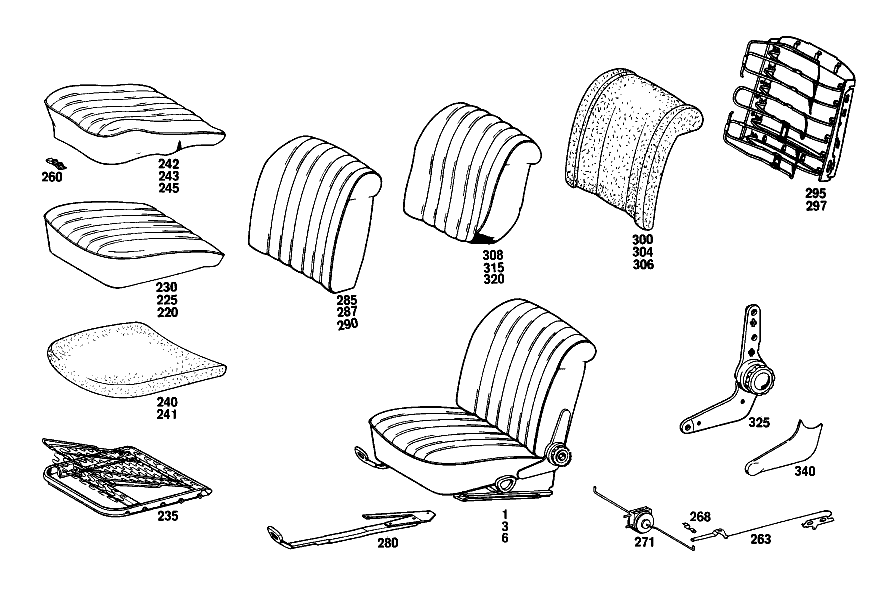

| № | Артикул | Название | Кол. | Примечание | Ограничение |
|---|---|---|---|---|---|
| 235 | A 108 910 19 22 | - РАМА ПОДУШКИ | 1 | Z 55.798/01, Z 55.798/02, Z 55.798/03, Z 55.798/04, Z 55.798/05, Z 55.798/06, Z 55.798/07, Z 55.798/08, Z 55.798/09, Z 55.798/10 | |
| 235 | A 108 910 19 22 | - РАМА ПОДУШКИ | 1 | Z 55.798/16, Z 55.798/17, Z 55.798/18, Z 55.798/19, Z 55.798/20 | |
| 240 | A 108 914 12 14 | - НАКЛАДКА | 1 | Z 55.798/02, Z 55.798/05, Z 55.798/06, Z 55.798/07, Z 55.798/09, Z 55.798/10 | |
| 240 | A 108 914 12 14 | - НАКЛАДКА | 1 | Z 55.798/11, Z 55.798/16, Z 55.798/17, Z 55.798/18, Z 55.798/19 | |
| 260 | A 003 988 01 78 | - Зажимная скоба | 6 | Z 55.798/16 | |
| 280 | A 108 910 39 05 | - ФИКСАТОР | 1 | СЛЕВА Z 55.798/01, Z 55.798/02, Z 55.798/03, Z 55.798/04, Z 55.798/05, Z 55.798/06, Z 55.798/07, Z 55.798/08, Z 55.798/09, Z 55.798/10 [402] БОЛЬШЕ НЕ ПОСТАВЛЯЕТСЯ | |
| 280 | A 108 910 39 05 | - ФИКСАТОР | 1 | СЛЕВА Z 55.798/11, Z 55.798/12, Z 55.798/13, Z 55.798/16, Z 55.798/17, Z 55.798/18, Z 55.798/19, Z 55.798/20 [402] БОЛЬШЕ НЕ ПОСТАВЛЯЕТСЯ | |
| 295 | A 108 910 03 34 | - РАМА СПИНКИ | 1 | Z 55.798/16, Z 55.798/17, Z 55.798/18 | |
| 297 | A 109 910 22 34 | - РАМА СПИНКИ | 1 | Z 55.798/05, Z 55.798/06, Z 55.798/07, Z 55.798/09, Z 55.798/10 | |
| 297 | A 109 910 22 34 | - РАМА СПИНКИ | 1 | Z 55.798/11, Z 55.798/12, Z 55.798/13, Z 55.798/19, Z 55.798/20 [028] FROM CHASSIS: 111.024,025 002794 | |
| 304 | A 109 914 29 16 | - НАКЛАДКА | 1 | Z 55.798/05, Z 55.798/06, Z 55.798/07, Z 55.798/09, Z 55.798/10 | |
| 304 | A 109 914 29 16 | - НАКЛАДКА | 1 | Z 55.798/11, Z 55.798/12, Z 55.798/13, Z 55.798/19 [027] UP TO CHASSIS: 111.024,025 002793 | |
| 306 | A 109 914 41 16 | - НАКЛАДКА | 1 | Z 55.798/20 | |
| 315 | A 109 910 51 47 | - ОБИВКА | 1 | Z 55.798/07 [001] STATE COLOR NUMBER WHEN ORDERING AND PLEASE STATE WHETHER FRONT SEAT BACKREST SHOULD BE MADE READY FOR INSTALLATION OF HEADREST [402] БОЛЬШЕ НЕ ПОСТАВЛЯЕТСЯ | |
| 320 | A 109 910 89 47 | - ОБИВКА | 1 | Z 55.798/20 [001] STATE COLOR NUMBER WHEN ORDERING AND PLEASE STATE WHETHER FRONT SEAT BACKREST SHOULD BE MADE READY FOR INSTALLATION OF HEADREST [402] БОЛЬШЕ НЕ ПОСТАВЛЯЕТСЯ | |
| A 108 910 37 12 | СИДЕНЬЕ ВОДИТЕЛЯ | 1 | СЛЕВА, С РЕГУЛИР. ВЫСОТЫ Рулевое управление: Влево Z 55.798/07 [001] STATE COLOR NUMBER WHEN ORDERING AND PLEASE STATE WHETHER FRONT SEAT BACKREST SHOULD BE MADE READY FOR INSTALLATION OF HEADREST [010] UP TO CHASSIS: 108.012 073380 108.016 014980 108.018 014024 108.019 014023 108.014,015 UNTIL PRODUCTION STOP | ||
| A 108 910 59 48 | СИДЕНЬЕ ВОДИТЕЛЯ | 1 | СЛЕВА, С РЕГУЛИР. ВЫСОТЫ Рулевое управление: Влево Z 55.798/07 [001] STATE COLOR NUMBER WHEN ORDERING AND PLEASE STATE WHETHER FRONT SEAT BACKREST SHOULD BE MADE READY FOR INSTALLATION OF HEADREST [011] FROM CHASSIS: 108.012 073381-074611 108.016 014981-024092 108.018 014025-024378 108.019 014024-024266 | ||
| A 108 910 49 53 | СИДЕНЬЕ ВОДИТЕЛЯ | 1 | СЛЕВА, С РЕГУЛИР. ВЫСОТЫ Рулевое управление: Влево Z 55.798/07 [001] STATE COLOR NUMBER WHEN ORDERING AND PLEASE STATE WHETHER FRONT SEAT BACKREST SHOULD BE MADE READY FOR INSTALLATION OF HEADREST [013] FROM CHASSIS: 108.012 074612 108.016 024093 108.018 024379 108.019 024267 | ||
| A 108 910 38 12 | СИДЕНЬЕ ВОДИТЕЛЯ | 1 | СПРАВА, С РЕГУЛИР. ВЫСОТЫ Рулевое управление: Вправо Z 55.798/07 [001] STATE COLOR NUMBER WHEN ORDERING AND PLEASE STATE WHETHER FRONT SEAT BACKREST SHOULD BE MADE READY FOR INSTALLATION OF HEADREST [010] UP TO CHASSIS: 108.012 073380 108.016 014980 108.018 014024 108.019 014023 108.014,015 UNTIL PRODUCTION STOP | ||
| A 108 910 60 48 | СИДЕНЬЕ ВОДИТЕЛЯ | 1 | СПРАВА, С РЕГУЛИР. ВЫСОТЫ Рулевое управление: Вправо Z 55.798/07 [001] STATE COLOR NUMBER WHEN ORDERING AND PLEASE STATE WHETHER FRONT SEAT BACKREST SHOULD BE MADE READY FOR INSTALLATION OF HEADREST [011] FROM CHASSIS: 108.012 073381-074611 108.016 014981-024092 108.018 014025-024378 108.019 014024-024266 | ||
| A 108 910 50 53 | СИДЕНЬЕ ВОДИТЕЛЯ | 1 | СПРАВА, С РЕГУЛИР. ВЫСОТЫ Рулевое управление: Вправо Z 55.798/07 [001] STATE COLOR NUMBER WHEN ORDERING AND PLEASE STATE WHETHER FRONT SEAT BACKREST SHOULD BE MADE READY FOR INSTALLATION OF HEADREST [013] FROM CHASSIS: 108.012 074612 108.016 024093 108.018 024379 108.019 024267 | ||
| A 108 910 39 12 | СИДЕНЬЕ ВОДИТЕЛЯ | 1 | СЛЕВА,БЕЗ РЕГУЛИРОВКИ ВЫСОТЫ Рулевое управление: Вправо Z 55.798/07 [001] STATE COLOR NUMBER WHEN ORDERING AND PLEASE STATE WHETHER FRONT SEAT BACKREST SHOULD BE MADE READY FOR INSTALLATION OF HEADREST [010] UP TO CHASSIS: 108.012 073380 108.016 014980 108.018 014024 108.019 014023 108.014,015 UNTIL PRODUCTION STOP | ||
| A 108 910 61 48 | СИДЕНЬЕ ВОДИТЕЛЯ | 1 | СЛЕВА,БЕЗ РЕГУЛИРОВКИ ВЫСОТЫ Рулевое управление: Вправо Z 55.798/07 [001] STATE COLOR NUMBER WHEN ORDERING AND PLEASE STATE WHETHER FRONT SEAT BACKREST SHOULD BE MADE READY FOR INSTALLATION OF HEADREST [011] FROM CHASSIS: 108.012 073381-074611 108.016 014981-024092 108.018 014025-024378 108.019 014024-024266 | ||
| A 108 910 51 53 | СИДЕНЬЕ ВОДИТЕЛЯ | 1 | СЛЕВА,БЕЗ РЕГУЛИРОВКИ ВЫСОТЫ Рулевое управление: Вправо Z 55.798/07 [001] STATE COLOR NUMBER WHEN ORDERING AND PLEASE STATE WHETHER FRONT SEAT BACKREST SHOULD BE MADE READY FOR INSTALLATION OF HEADREST [013] FROM CHASSIS: 108.012 074612 108.016 024093 108.018 024379 108.019 024267 | ||
| A 108 910 40 12 | СИДЕНЬЕ ВОДИТЕЛЯ | 1 | СПРАВА,БЕЗ РЕГУЛИР.ВЫСОТЫ Рулевое управление: Влево Z 55.798/07 [001] STATE COLOR NUMBER WHEN ORDERING AND PLEASE STATE WHETHER FRONT SEAT BACKREST SHOULD BE MADE READY FOR INSTALLATION OF HEADREST [010] UP TO CHASSIS: 108.012 073380 108.016 014980 108.018 014024 108.019 014023 108.014,015 UNTIL PRODUCTION STOP | ||
| A 108 910 62 48 | СИДЕНЬЕ ВОДИТЕЛЯ | 1 | СПРАВА,БЕЗ РЕГУЛИР.ВЫСОТЫ Рулевое управление: Влево Z 55.798/07 [001] STATE COLOR NUMBER WHEN ORDERING AND PLEASE STATE WHETHER FRONT SEAT BACKREST SHOULD BE MADE READY FOR INSTALLATION OF HEADREST [011] FROM CHASSIS: 108.012 073381-074611 108.016 014981-024092 108.018 014025-024378 108.019 014024-024266 | ||
| A 108 910 52 53 | СИДЕНЬЕ ВОДИТЕЛЯ | 1 | СПРАВА,БЕЗ РЕГУЛИР.ВЫСОТЫ Рулевое управление: Влево Z 55.798/07 [001] STATE COLOR NUMBER WHEN ORDERING AND PLEASE STATE WHETHER FRONT SEAT BACKREST SHOULD BE MADE READY FOR INSTALLATION OF HEADREST [013] FROM CHASSIS: 108.012 074612 108.016 024093 108.018 024379 108.019 024267 | ||
| A 108 910 41 12 | СИДЕНЬЕ ВОДИТЕЛЯ | 1 | СЛЕВА, С РЕГУЛИР. ВЫСОТЫ Рулевое управление: Влево Z 55.798/08 [001] STATE COLOR NUMBER WHEN ORDERING AND PLEASE STATE WHETHER FRONT SEAT BACKREST SHOULD BE MADE READY FOR INSTALLATION OF HEADREST [010] UP TO CHASSIS: 108.012 073380 108.016 014980 108.018 014024 108.019 014023 108.014,015 UNTIL PRODUCTION STOP | ||
| A 108 910 63 48 | СИДЕНЬЕ ВОДИТЕЛЯ | 1 | СЛЕВА, С РЕГУЛИР. ВЫСОТЫ Рулевое управление: Влево Z 55.798/08 [001] STATE COLOR NUMBER WHEN ORDERING AND PLEASE STATE WHETHER FRONT SEAT BACKREST SHOULD BE MADE READY FOR INSTALLATION OF HEADREST [011] FROM CHASSIS: 108.012 073381-074611 108.016 014981-024092 108.018 014025-024378 108.019 014024-024266 | ||
| A 108 910 53 53 | СИДЕНЬЕ ВОДИТЕЛЯ | 1 | СЛЕВА, С РЕГУЛИР. ВЫСОТЫ Рулевое управление: Влево Z 55.798/08 [001] STATE COLOR NUMBER WHEN ORDERING AND PLEASE STATE WHETHER FRONT SEAT BACKREST SHOULD BE MADE READY FOR INSTALLATION OF HEADREST [013] FROM CHASSIS: 108.012 074612 108.016 024093 108.018 024379 108.019 024267 | ||
| A 108 910 42 12 | СИДЕНЬЕ ВОДИТЕЛЯ | 1 | СПРАВА, С РЕГУЛИР. ВЫСОТЫ Рулевое управление: Вправо Z 55.798/08 [001] STATE COLOR NUMBER WHEN ORDERING AND PLEASE STATE WHETHER FRONT SEAT BACKREST SHOULD BE MADE READY FOR INSTALLATION OF HEADREST [010] UP TO CHASSIS: 108.012 073380 108.016 014980 108.018 014024 108.019 014023 108.014,015 UNTIL PRODUCTION STOP | ||
| A 108 910 64 48 | СИДЕНЬЕ ВОДИТЕЛЯ | 1 | СПРАВА, С РЕГУЛИР. ВЫСОТЫ Рулевое управление: Вправо Z 55.798/08 [001] STATE COLOR NUMBER WHEN ORDERING AND PLEASE STATE WHETHER FRONT SEAT BACKREST SHOULD BE MADE READY FOR INSTALLATION OF HEADREST [011] FROM CHASSIS: 108.012 073381-074611 108.016 014981-024092 108.018 014025-024378 108.019 014024-024266 | ||
| A 108 910 54 53 | СИДЕНЬЕ ВОДИТЕЛЯ | 1 | СПРАВА, С РЕГУЛИР. ВЫСОТЫ Рулевое управление: Вправо Z 55.798/08 [001] STATE COLOR NUMBER WHEN ORDERING AND PLEASE STATE WHETHER FRONT SEAT BACKREST SHOULD BE MADE READY FOR INSTALLATION OF HEADREST [013] FROM CHASSIS: 108.012 074612 108.016 024093 108.018 024379 108.019 024267 | ||
| A 108 910 43 12 | СИДЕНЬЕ ВОДИТЕЛЯ | 1 | СЛЕВА,БЕЗ РЕГУЛИРОВКИ ВЫСОТЫ Рулевое управление: Вправо Z 55.798/08 [001] STATE COLOR NUMBER WHEN ORDERING AND PLEASE STATE WHETHER FRONT SEAT BACKREST SHOULD BE MADE READY FOR INSTALLATION OF HEADREST [010] UP TO CHASSIS: 108.012 073380 108.016 014980 108.018 014024 108.019 014023 108.014,015 UNTIL PRODUCTION STOP | ||
| A 108 910 65 48 | СИДЕНЬЕ ВОДИТЕЛЯ | 1 | СЛЕВА,БЕЗ РЕГУЛИРОВКИ ВЫСОТЫ Рулевое управление: Вправо Z 55.798/08 [001] STATE COLOR NUMBER WHEN ORDERING AND PLEASE STATE WHETHER FRONT SEAT BACKREST SHOULD BE MADE READY FOR INSTALLATION OF HEADREST [011] FROM CHASSIS: 108.012 073381-074611 108.016 014981-024092 108.018 014025-024378 108.019 014024-024266 | ||
| A 108 910 55 53 | СИДЕНЬЕ ВОДИТЕЛЯ | 1 | СЛЕВА,БЕЗ РЕГУЛИРОВКИ ВЫСОТЫ Рулевое управление: Вправо Z 55.798/08 [001] STATE COLOR NUMBER WHEN ORDERING AND PLEASE STATE WHETHER FRONT SEAT BACKREST SHOULD BE MADE READY FOR INSTALLATION OF HEADREST [013] FROM CHASSIS: 108.012 074612 108.016 024093 108.018 024379 108.019 024267 | ||
| A 108 910 44 12 | СИДЕНЬЕ ВОДИТЕЛЯ | 1 | СПРАВА,БЕЗ РЕГУЛИР.ВЫСОТЫ Рулевое управление: Влево Z 55.798/08 [001] STATE COLOR NUMBER WHEN ORDERING AND PLEASE STATE WHETHER FRONT SEAT BACKREST SHOULD BE MADE READY FOR INSTALLATION OF HEADREST [010] UP TO CHASSIS: 108.012 073380 108.016 014980 108.018 014024 108.019 014023 108.014,015 UNTIL PRODUCTION STOP | ||
| A 108 910 66 48 | СИДЕНЬЕ ВОДИТЕЛЯ | 1 | СПРАВА,БЕЗ РЕГУЛИР.ВЫСОТЫ Рулевое управление: Влево Z 55.798/08 [001] STATE COLOR NUMBER WHEN ORDERING AND PLEASE STATE WHETHER FRONT SEAT BACKREST SHOULD BE MADE READY FOR INSTALLATION OF HEADREST [011] FROM CHASSIS: 108.012 073381-074611 108.016 014981-024092 108.018 014025-024378 108.019 014024-024266 | ||
| A 108 910 56 53 | СИДЕНЬЕ ВОДИТЕЛЯ | 1 | СПРАВА,БЕЗ РЕГУЛИР.ВЫСОТЫ Рулевое управление: Влево Z 55.798/08 [001] STATE COLOR NUMBER WHEN ORDERING AND PLEASE STATE WHETHER FRONT SEAT BACKREST SHOULD BE MADE READY FOR INSTALLATION OF HEADREST [013] FROM CHASSIS: 108.012 074612 108.016 024093 108.018 024379 108.019 024267 | ||
| A 109 910 12 30 | - ПОДУШКА СИДЕНЬЯ | - | Z 55.798/08 | ||
| A 109 910 09 30 | - ПОДУШКА СИДЕНЬЯ | 1 | Z 55.798/04, Z 55.798/08 [001] STATE COLOR NUMBER WHEN ORDERING AND PLEASE STATE WHETHER FRONT SEAT BACKREST SHOULD BE MADE READY FOR INSTALLATION OF HEADREST | ||
| A 109 910 11 30 | - ПОДУШКА СИДЕНЬЯ | 1 | Z 55.798/07 [001] STATE COLOR NUMBER WHEN ORDERING AND PLEASE STATE WHETHER FRONT SEAT BACKREST SHOULD BE MADE READY FOR INSTALLATION OF HEADREST | ||
| A 109 914 01 14 | - НАКЛАДКА | 1 | Z 55.798/04, Z 55.798/08 | ||
| A 108 910 97 32 | - СПИНКА СИДЕНЬЯ | 1 | Z 55.798/07 [001] STATE COLOR NUMBER WHEN ORDERING AND PLEASE STATE WHETHER FRONT SEAT BACKREST SHOULD BE MADE READY FOR INSTALLATION OF HEADREST | ||
| A 108 910 98 32 | - СПИНКА СИДЕНЬЯ | 1 | Z 55.798/08 [001] STATE COLOR NUMBER WHEN ORDERING AND PLEASE STATE WHETHER FRONT SEAT BACKREST SHOULD BE MADE READY FOR INSTALLATION OF HEADREST | ||
| A 109 910 21 34 | - РАМА СПИНКИ | 1 | Z 55.798/04, Z 55.798/08 | ||
| A 109 914 25 16 | - НАКЛАДКА | 1 | СПРАВА Z 55.798/04, Z 55.798/08 | ||
| A 108 910 09 12 | СИДЕНЬЕ ВОДИТЕЛЯ | 1 | СЛЕВА, С РЕГУЛИР. ВЫСОТЫ Рулевое управление: Влево Z 55.798/16 [001] STATE COLOR NUMBER WHEN ORDERING AND PLEASE STATE WHETHER FRONT SEAT BACKREST SHOULD BE MADE READY FOR INSTALLATION OF HEADREST [010] UP TO CHASSIS: 108.012 073380 108.016 014980 108.018 014024 108.019 014023 108.014,015 UNTIL PRODUCTION STOP | ||
| A 108 910 67 48 | СИДЕНЬЕ ВОДИТЕЛЯ | 1 | СЛЕВА, С РЕГУЛИР. ВЫСОТЫ Рулевое управление: Влево Z 55.798/16 [001] STATE COLOR NUMBER WHEN ORDERING AND PLEASE STATE WHETHER FRONT SEAT BACKREST SHOULD BE MADE READY FOR INSTALLATION OF HEADREST [011] FROM CHASSIS: 108.012 073381-074611 108.016 014981-024092 108.018 014025-024378 108.019 014024-024266 | ||
| A 108 910 57 53 | СИДЕНЬЕ ВОДИТЕЛЯ | 1 | СЛЕВА, С РЕГУЛИР. ВЫСОТЫ Рулевое управление: Влево Z 55.798/16 [001] STATE COLOR NUMBER WHEN ORDERING AND PLEASE STATE WHETHER FRONT SEAT BACKREST SHOULD BE MADE READY FOR INSTALLATION OF HEADREST [013] FROM CHASSIS: 108.012 074612 108.016 024093 108.018 024379 108.019 024267 | ||
| A 108 910 10 12 | СИДЕНЬЕ ВОДИТЕЛЯ | 1 | СПРАВА, С РЕГУЛИР. ВЫСОТЫ Рулевое управление: Вправо Z 55.798/16 [001] STATE COLOR NUMBER WHEN ORDERING AND PLEASE STATE WHETHER FRONT SEAT BACKREST SHOULD BE MADE READY FOR INSTALLATION OF HEADREST [010] UP TO CHASSIS: 108.012 073380 108.016 014980 108.018 014024 108.019 014023 108.014,015 UNTIL PRODUCTION STOP | ||
| A 108 910 68 48 | СИДЕНЬЕ ВОДИТЕЛЯ | 1 | СПРАВА, С РЕГУЛИР. ВЫСОТЫ Рулевое управление: Вправо Z 55.798/16 [001] STATE COLOR NUMBER WHEN ORDERING AND PLEASE STATE WHETHER FRONT SEAT BACKREST SHOULD BE MADE READY FOR INSTALLATION OF HEADREST [011] FROM CHASSIS: 108.012 073381-074611 108.016 014981-024092 108.018 014025-024378 108.019 014024-024266 | ||
| A 108 910 58 53 | СИДЕНЬЕ ВОДИТЕЛЯ | 1 | СПРАВА, С РЕГУЛИР. ВЫСОТЫ Рулевое управление: Вправо Z 55.798/16 [001] STATE COLOR NUMBER WHEN ORDERING AND PLEASE STATE WHETHER FRONT SEAT BACKREST SHOULD BE MADE READY FOR INSTALLATION OF HEADREST [013] FROM CHASSIS: 108.012 074612 108.016 024093 108.018 024379 108.019 024267 | ||
| A 108 910 90 53 | СИДЕНЬЕ ВОДИТЕЛЯ | 1 | СПРАВА, С РЕГУЛИР. ВЫСОТЫ Рулевое управление: Вправо Z 55.798/16 [001] STATE COLOR NUMBER WHEN ORDERING AND PLEASE STATE WHETHER FRONT SEAT BACKREST SHOULD BE MADE READY FOR INSTALLATION OF HEADREST [402] БОЛЬШЕ НЕ ПОСТАВЛЯЕТСЯ | ||
| A 108 910 11 12 | СИДЕНЬЕ ВОДИТЕЛЯ | 1 | СЛЕВА,БЕЗ РЕГУЛИРОВКИ ВЫСОТЫ Рулевое управление: Вправо Z 55.798/16 [001] STATE COLOR NUMBER WHEN ORDERING AND PLEASE STATE WHETHER FRONT SEAT BACKREST SHOULD BE MADE READY FOR INSTALLATION OF HEADREST [010] UP TO CHASSIS: 108.012 073380 108.016 014980 108.018 014024 108.019 014023 108.014,015 UNTIL PRODUCTION STOP | ||
| A 108 910 69 48 | СИДЕНЬЕ ВОДИТЕЛЯ | 1 | СЛЕВА,БЕЗ РЕГУЛИРОВКИ ВЫСОТЫ Рулевое управление: Вправо Z 55.798/16 [001] STATE COLOR NUMBER WHEN ORDERING AND PLEASE STATE WHETHER FRONT SEAT BACKREST SHOULD BE MADE READY FOR INSTALLATION OF HEADREST [011] FROM CHASSIS: 108.012 073381-074611 108.016 014981-024092 108.018 014025-024378 108.019 014024-024266 | ||
| A 108 910 59 53 | СИДЕНЬЕ ВОДИТЕЛЯ | 1 | СЛЕВА,БЕЗ РЕГУЛИРОВКИ ВЫСОТЫ Рулевое управление: Вправо Z 55.798/16 [001] STATE COLOR NUMBER WHEN ORDERING AND PLEASE STATE WHETHER FRONT SEAT BACKREST SHOULD BE MADE READY FOR INSTALLATION OF HEADREST [013] FROM CHASSIS: 108.012 074612 108.016 024093 108.018 024379 108.019 024267 | ||
| A 108 910 12 12 | СИДЕНЬЕ ВОДИТЕЛЯ | 1 | СПРАВА,БЕЗ РЕГУЛИР.ВЫСОТЫ Рулевое управление: Влево Z 55.798/16 [001] STATE COLOR NUMBER WHEN ORDERING AND PLEASE STATE WHETHER FRONT SEAT BACKREST SHOULD BE MADE READY FOR INSTALLATION OF HEADREST [010] UP TO CHASSIS: 108.012 073380 108.016 014980 108.018 014024 108.019 014023 108.014,015 UNTIL PRODUCTION STOP | ||
| A 108 910 70 48 | СИДЕНЬЕ ВОДИТЕЛЯ | 1 | СПРАВА,БЕЗ РЕГУЛИР.ВЫСОТЫ Рулевое управление: Влево Z 55.798/16 [001] STATE COLOR NUMBER WHEN ORDERING AND PLEASE STATE WHETHER FRONT SEAT BACKREST SHOULD BE MADE READY FOR INSTALLATION OF HEADREST [011] FROM CHASSIS: 108.012 073381-074611 108.016 014981-024092 108.018 014025-024378 108.019 014024-024266 | ||
| A 108 910 60 53 | СИДЕНЬЕ ВОДИТЕЛЯ | 1 | СПРАВА,БЕЗ РЕГУЛИР.ВЫСОТЫ Рулевое управление: Влево Z 55.798/16 [001] STATE COLOR NUMBER WHEN ORDERING AND PLEASE STATE WHETHER FRONT SEAT BACKREST SHOULD BE MADE READY FOR INSTALLATION OF HEADREST [013] FROM CHASSIS: 108.012 074612 108.016 024093 108.018 024379 108.019 024267 | ||
| A 108 910 45 12 | СИДЕНЬЕ ВОДИТЕЛЯ | 1 | СЛЕВА, С РЕГУЛИР. ВЫСОТЫ Рулевое управление: Влево Z 55.798/17 [001] STATE COLOR NUMBER WHEN ORDERING AND PLEASE STATE WHETHER FRONT SEAT BACKREST SHOULD BE MADE READY FOR INSTALLATION OF HEADREST [010] UP TO CHASSIS: 108.012 073380 108.016 014980 108.018 014024 108.019 014023 108.014,015 UNTIL PRODUCTION STOP | ||
| A 108 910 71 48 | СИДЕНЬЕ ВОДИТЕЛЯ | 1 | СЛЕВА, С РЕГУЛИР. ВЫСОТЫ Рулевое управление: Влево Z 55.798/17 [001] STATE COLOR NUMBER WHEN ORDERING AND PLEASE STATE WHETHER FRONT SEAT BACKREST SHOULD BE MADE READY FOR INSTALLATION OF HEADREST [011] FROM CHASSIS: 108.012 073381-074611 108.016 014981-024092 108.018 014025-024378 108.019 014024-024266 | ||
| A 108 910 46 12 | СИДЕНЬЕ ВОДИТЕЛЯ | 1 | СПРАВА, С РЕГУЛИР. ВЫСОТЫ Рулевое управление: Вправо Z 55.798/17 [001] STATE COLOR NUMBER WHEN ORDERING AND PLEASE STATE WHETHER FRONT SEAT BACKREST SHOULD BE MADE READY FOR INSTALLATION OF HEADREST [010] UP TO CHASSIS: 108.012 073380 108.016 014980 108.018 014024 108.019 014023 108.014,015 UNTIL PRODUCTION STOP | ||
| A 108 910 72 48 | СИДЕНЬЕ ВОДИТЕЛЯ | 1 | СПРАВА, С РЕГУЛИР. ВЫСОТЫ Рулевое управление: Вправо Z 55.798/17 [001] STATE COLOR NUMBER WHEN ORDERING AND PLEASE STATE WHETHER FRONT SEAT BACKREST SHOULD BE MADE READY FOR INSTALLATION OF HEADREST [011] FROM CHASSIS: 108.012 073381-074611 108.016 014981-024092 108.018 014025-024378 108.019 014024-024266 | ||
| A 108 910 47 12 | СИДЕНЬЕ ВОДИТЕЛЯ | 1 | СЛЕВА,БЕЗ РЕГУЛИРОВКИ ВЫСОТЫ Рулевое управление: Вправо Z 55.798/17 [001] STATE COLOR NUMBER WHEN ORDERING AND PLEASE STATE WHETHER FRONT SEAT BACKREST SHOULD BE MADE READY FOR INSTALLATION OF HEADREST [010] UP TO CHASSIS: 108.012 073380 108.016 014980 108.018 014024 108.019 014023 108.014,015 UNTIL PRODUCTION STOP | ||
| A 108 910 73 48 | СИДЕНЬЕ ВОДИТЕЛЯ | 1 | СЛЕВА,БЕЗ РЕГУЛИРОВКИ ВЫСОТЫ Рулевое управление: Вправо Z 55.798/17 [001] STATE COLOR NUMBER WHEN ORDERING AND PLEASE STATE WHETHER FRONT SEAT BACKREST SHOULD BE MADE READY FOR INSTALLATION OF HEADREST [011] FROM CHASSIS: 108.012 073381-074611 108.016 014981-024092 108.018 014025-024378 108.019 014024-024266 | ||
| A 108 910 48 12 | СИДЕНЬЕ ВОДИТЕЛЯ | 1 | СПРАВА,БЕЗ РЕГУЛИР.ВЫСОТЫ Рулевое управление: Влево Z 55.798/17 [001] STATE COLOR NUMBER WHEN ORDERING AND PLEASE STATE WHETHER FRONT SEAT BACKREST SHOULD BE MADE READY FOR INSTALLATION OF HEADREST [010] UP TO CHASSIS: 108.012 073380 108.016 014980 108.018 014024 108.019 014023 108.014,015 UNTIL PRODUCTION STOP | ||
| A 108 910 74 48 | СИДЕНЬЕ ВОДИТЕЛЯ | 1 | СПРАВА,БЕЗ РЕГУЛИР.ВЫСОТЫ Рулевое управление: Влево Z 55.798/17 [001] STATE COLOR NUMBER WHEN ORDERING AND PLEASE STATE WHETHER FRONT SEAT BACKREST SHOULD BE MADE READY FOR INSTALLATION OF HEADREST [011] FROM CHASSIS: 108.012 073381-074611 108.016 014981-024092 108.018 014025-024378 108.019 014024-024266 | ||
| A 108 910 49 12 | СИДЕНЬЕ ВОДИТЕЛЯ | 1 | СЛЕВА, С РЕГУЛИР. ВЫСОТЫ Рулевое управление: Влево Z 55.798/18 [001] STATE COLOR NUMBER WHEN ORDERING AND PLEASE STATE WHETHER FRONT SEAT BACKREST SHOULD BE MADE READY FOR INSTALLATION OF HEADREST [010] UP TO CHASSIS: 108.012 073380 108.016 014980 108.018 014024 108.019 014023 108.014,015 UNTIL PRODUCTION STOP | ||
| A 108 910 75 48 | СИДЕНЬЕ ВОДИТЕЛЯ | 1 | СЛЕВА, С РЕГУЛИР. ВЫСОТЫ Рулевое управление: Влево Z 55.798/18 [001] STATE COLOR NUMBER WHEN ORDERING AND PLEASE STATE WHETHER FRONT SEAT BACKREST SHOULD BE MADE READY FOR INSTALLATION OF HEADREST [011] FROM CHASSIS: 108.012 073381-074611 108.016 014981-024092 108.018 014025-024378 108.019 014024-024266 | ||
| A 108 910 50 12 | СИДЕНЬЕ ВОДИТЕЛЯ | 1 | СПРАВА, С РЕГУЛИР. ВЫСОТЫ Рулевое управление: Вправо Z 55.798/18 [001] STATE COLOR NUMBER WHEN ORDERING AND PLEASE STATE WHETHER FRONT SEAT BACKREST SHOULD BE MADE READY FOR INSTALLATION OF HEADREST [010] UP TO CHASSIS: 108.012 073380 108.016 014980 108.018 014024 108.019 014023 108.014,015 UNTIL PRODUCTION STOP | ||
| A 108 910 76 48 | СИДЕНЬЕ ВОДИТЕЛЯ | 1 | СПРАВА, С РЕГУЛИР. ВЫСОТЫ Рулевое управление: Вправо Z 55.798/18 [001] STATE COLOR NUMBER WHEN ORDERING AND PLEASE STATE WHETHER FRONT SEAT BACKREST SHOULD BE MADE READY FOR INSTALLATION OF HEADREST [011] FROM CHASSIS: 108.012 073381-074611 108.016 014981-024092 108.018 014025-024378 108.019 014024-024266 | ||
| A 108 910 51 12 | СИДЕНЬЕ ВОДИТЕЛЯ | 1 | СЛЕВА,БЕЗ РЕГУЛИРОВКИ ВЫСОТЫ Рулевое управление: Вправо Z 55.798/18 [001] STATE COLOR NUMBER WHEN ORDERING AND PLEASE STATE WHETHER FRONT SEAT BACKREST SHOULD BE MADE READY FOR INSTALLATION OF HEADREST [010] UP TO CHASSIS: 108.012 073380 108.016 014980 108.018 014024 108.019 014023 108.014,015 UNTIL PRODUCTION STOP | ||
| A 108 910 77 48 | СИДЕНЬЕ ВОДИТЕЛЯ | 1 | СЛЕВА,БЕЗ РЕГУЛИРОВКИ ВЫСОТЫ Рулевое управление: Вправо Z 55.798/18 [001] STATE COLOR NUMBER WHEN ORDERING AND PLEASE STATE WHETHER FRONT SEAT BACKREST SHOULD BE MADE READY FOR INSTALLATION OF HEADREST [011] FROM CHASSIS: 108.012 073381-074611 108.016 014981-024092 108.018 014025-024378 108.019 014024-024266 | ||
| A 108 910 67 53 | СИДЕНЬЕ ВОДИТЕЛЯ | 1 | СЛЕВА,БЕЗ РЕГУЛИРОВКИ ВЫСОТЫ Рулевое управление: Вправо Z 55.798/18 [001] STATE COLOR NUMBER WHEN ORDERING AND PLEASE STATE WHETHER FRONT SEAT BACKREST SHOULD BE MADE READY FOR INSTALLATION OF HEADREST [013] FROM CHASSIS: 108.012 074612 108.016 024093 108.018 024379 108.019 024267 | ||
| A 108 910 52 12 | СИДЕНЬЕ ВОДИТЕЛЯ | 1 | СПРАВА, С РЕГУЛИР. ВЫСОТЫ Рулевое управление: Влево Z 55.798/18 [001] STATE COLOR NUMBER WHEN ORDERING AND PLEASE STATE WHETHER FRONT SEAT BACKREST SHOULD BE MADE READY FOR INSTALLATION OF HEADREST [010] UP TO CHASSIS: 108.012 073380 108.016 014980 108.018 014024 108.019 014023 108.014,015 UNTIL PRODUCTION STOP | ||
| A 108 910 78 48 | СИДЕНЬЕ ВОДИТЕЛЯ | 1 | СПРАВА, С РЕГУЛИР. ВЫСОТЫ Рулевое управление: Влево Z 55.798/18 [001] STATE COLOR NUMBER WHEN ORDERING AND PLEASE STATE WHETHER FRONT SEAT BACKREST SHOULD BE MADE READY FOR INSTALLATION OF HEADREST [011] FROM CHASSIS: 108.012 073381-074611 108.016 014981-024092 108.018 014025-024378 108.019 014024-024266 | ||
| A 108 910 68 53 | СИДЕНЬЕ ВОДИТЕЛЯ | 1 | СПРАВА, С РЕГУЛИР. ВЫСОТЫ Рулевое управление: Влево Z 55.798/18 [001] STATE COLOR NUMBER WHEN ORDERING AND PLEASE STATE WHETHER FRONT SEAT BACKREST SHOULD BE MADE READY FOR INSTALLATION OF HEADREST [013] FROM CHASSIS: 108.012 074612 108.016 024093 108.018 024379 108.019 024267 | ||
| A 108 910 53 12 | СИДЕНЬЕ ВОДИТЕЛЯ | 1 | СЛЕВА, С РЕГУЛИР. ВЫСОТЫ Рулевое управление: Влево Z 55.798/19 [001] STATE COLOR NUMBER WHEN ORDERING AND PLEASE STATE WHETHER FRONT SEAT BACKREST SHOULD BE MADE READY FOR INSTALLATION OF HEADREST [010] UP TO CHASSIS: 108.012 073380 108.016 014980 108.018 014024 108.019 014023 108.014,015 UNTIL PRODUCTION STOP | ||
| A 108 910 79 48 | СИДЕНЬЕ ВОДИТЕЛЯ | 1 | СЛЕВА, С РЕГУЛИР. ВЫСОТЫ Рулевое управление: Влево Z 55.798/19 [001] STATE COLOR NUMBER WHEN ORDERING AND PLEASE STATE WHETHER FRONT SEAT BACKREST SHOULD BE MADE READY FOR INSTALLATION OF HEADREST [011] FROM CHASSIS: 108.012 073381-074611 108.016 014981-024092 108.018 014025-024378 108.019 014024-024266 | ||
| A 108 910 54 12 | СИДЕНЬЕ ВОДИТЕЛЯ | 1 | СПРАВА, С РЕГУЛИР. ВЫСОТЫ Рулевое управление: Вправо Z 55.798/19 [001] STATE COLOR NUMBER WHEN ORDERING AND PLEASE STATE WHETHER FRONT SEAT BACKREST SHOULD BE MADE READY FOR INSTALLATION OF HEADREST [010] UP TO CHASSIS: 108.012 073380 108.016 014980 108.018 014024 108.019 014023 108.014,015 UNTIL PRODUCTION STOP | ||
| A 108 910 80 48 | СИДЕНЬЕ ВОДИТЕЛЯ | 1 | СПРАВА, С РЕГУЛИР. ВЫСОТЫ Рулевое управление: Вправо Z 55.798/19 [001] STATE COLOR NUMBER WHEN ORDERING AND PLEASE STATE WHETHER FRONT SEAT BACKREST SHOULD BE MADE READY FOR INSTALLATION OF HEADREST [011] FROM CHASSIS: 108.012 073381-074611 108.016 014981-024092 108.018 014025-024378 108.019 014024-024266 | ||
| A 108 910 55 12 | СИДЕНЬЕ ВОДИТЕЛЯ | 1 | СЛЕВА,БЕЗ РЕГУЛИРОВКИ ВЫСОТЫ Рулевое управление: Вправо Z 55.798/19 [001] STATE COLOR NUMBER WHEN ORDERING AND PLEASE STATE WHETHER FRONT SEAT BACKREST SHOULD BE MADE READY FOR INSTALLATION OF HEADREST [010] UP TO CHASSIS: 108.012 073380 108.016 014980 108.018 014024 108.019 014023 108.014,015 UNTIL PRODUCTION STOP | ||
| A 108 910 81 48 | СИДЕНЬЕ ВОДИТЕЛЯ | 1 | СЛЕВА,БЕЗ РЕГУЛИРОВКИ ВЫСОТЫ Рулевое управление: Вправо Z 55.798/19 [001] STATE COLOR NUMBER WHEN ORDERING AND PLEASE STATE WHETHER FRONT SEAT BACKREST SHOULD BE MADE READY FOR INSTALLATION OF HEADREST [011] FROM CHASSIS: 108.012 073381-074611 108.016 014981-024092 108.018 014025-024378 108.019 014024-024266 | ||
| A 108 910 56 12 | СИДЕНЬЕ ВОДИТЕЛЯ | 1 | СПРАВА,БЕЗ РЕГУЛИР.ВЫСОТЫ Рулевое управление: Влево Z 55.798/19 [001] STATE COLOR NUMBER WHEN ORDERING AND PLEASE STATE WHETHER FRONT SEAT BACKREST SHOULD BE MADE READY FOR INSTALLATION OF HEADREST [010] UP TO CHASSIS: 108.012 073380 108.016 014980 108.018 014024 108.019 014023 108.014,015 UNTIL PRODUCTION STOP | ||
| A 108 910 82 48 | СИДЕНЬЕ ВОДИТЕЛЯ | 1 | СПРАВА,БЕЗ РЕГУЛИР.ВЫСОТЫ Рулевое управление: Влево Z 55.798/19 [001] STATE COLOR NUMBER WHEN ORDERING AND PLEASE STATE WHETHER FRONT SEAT BACKREST SHOULD BE MADE READY FOR INSTALLATION OF HEADREST [011] FROM CHASSIS: 108.012 073381-074611 108.016 014981-024092 108.018 014025-024378 108.019 014024-024266 | ||
| A 108 910 07 03 | ПЕРЕДНЕЕ СИДЕНЬЕ | 1 | СЛЕВА,БЕЗ РЕГУЛИРОВКИ ВЫСОТЫ Рулевое управление: Вправо Z 55.798/20 [001] STATE COLOR NUMBER WHEN ORDERING AND PLEASE STATE WHETHER FRONT SEAT BACKREST SHOULD BE MADE READY FOR INSTALLATION OF HEADREST | ||
| A 108 910 08 03 | ПЕРЕДНЕЕ СИДЕНЬЕ | 1 | СПРАВА,БЕЗ РЕГУЛИР.ВЫСОТЫ Рулевое управление: Влево Z 55.798/20 [001] STATE COLOR NUMBER WHEN ORDERING AND PLEASE STATE WHETHER FRONT SEAT BACKREST SHOULD BE MADE READY FOR INSTALLATION OF HEADREST | ||
| A 108 910 24 30 | - ПОДУШКА СИДЕНЬЯ | 1 | Z 55.798/16 [001] STATE COLOR NUMBER WHEN ORDERING AND PLEASE STATE WHETHER FRONT SEAT BACKREST SHOULD BE MADE READY FOR INSTALLATION OF HEADREST | ||
| A 108 910 49 30 | - ПОДУШКА СИДЕНЬЯ | 1 | Z 55.798/16 [001] STATE COLOR NUMBER WHEN ORDERING AND PLEASE STATE WHETHER FRONT SEAT BACKREST SHOULD BE MADE READY FOR INSTALLATION OF HEADREST | ||
| A 108 910 32 30 | - ПОДУШКА СИДЕНЬЯ | 1 | Z 55.798/17 [001] STATE COLOR NUMBER WHEN ORDERING AND PLEASE STATE WHETHER FRONT SEAT BACKREST SHOULD BE MADE READY FOR INSTALLATION OF HEADREST | ||
| A 108 910 33 30 | - ПОДУШКА СИДЕНЬЯ | 1 | Z 55.798/18 [001] STATE COLOR NUMBER WHEN ORDERING AND PLEASE STATE WHETHER FRONT SEAT BACKREST SHOULD BE MADE READY FOR INSTALLATION OF HEADREST | ||
| A 108 910 34 30 | - ПОДУШКА СИДЕНЬЯ | 1 | Z 55.798/19 [001] STATE COLOR NUMBER WHEN ORDERING AND PLEASE STATE WHETHER FRONT SEAT BACKREST SHOULD BE MADE READY FOR INSTALLATION OF HEADREST [012] UP TO CHASSIS: 108.012 074611 108.016 024092 108.018 024378 108.019 024266 | ||
| A 108 910 44 30 | - ПОДУШКА СИДЕНЬЯ | 1 | Z 55.798/19 [001] STATE COLOR NUMBER WHEN ORDERING AND PLEASE STATE WHETHER FRONT SEAT BACKREST SHOULD BE MADE READY FOR INSTALLATION OF HEADREST [013] FROM CHASSIS: 108.012 074612 108.016 024093 108.018 024379 108.019 024267 | ||
| A 109 910 17 30 | - ПОДУШКА СИДЕНЬЯ | 1 | Z 55.798/20 [001] STATE COLOR NUMBER WHEN ORDERING AND PLEASE STATE WHETHER FRONT SEAT BACKREST SHOULD BE MADE READY FOR INSTALLATION OF HEADREST | ||
| A 108 914 19 14 | - НАКЛАДКА | 1 | Z 55.798/16, Z 55.798/20 | ||
| A 108 910 53 46 | - ОБИВКА | 1 | Z 55.798/17 [001] STATE COLOR NUMBER WHEN ORDERING AND PLEASE STATE WHETHER FRONT SEAT BACKREST SHOULD BE MADE READY FOR INSTALLATION OF HEADREST | ||
| A 108 910 54 46 | - ОБИВКА | 1 | Z 55.798/18 [001] STATE COLOR NUMBER WHEN ORDERING AND PLEASE STATE WHETHER FRONT SEAT BACKREST SHOULD BE MADE READY FOR INSTALLATION OF HEADREST | ||
| A 108 910 55 46 | - ОБИВКА | 1 | Z 55.798/19 [001] STATE COLOR NUMBER WHEN ORDERING AND PLEASE STATE WHETHER FRONT SEAT BACKREST SHOULD BE MADE READY FOR INSTALLATION OF HEADREST [402] БОЛЬШЕ НЕ ПОСТАВЛЯЕТСЯ [012] UP TO CHASSIS: 108.012 074611 108.016 024092 108.018 024378 108.019 024266 | ||
| A 108 910 72 46 | - ОБИВКА | 1 | Z 55.798/19 [001] STATE COLOR NUMBER WHEN ORDERING AND PLEASE STATE WHETHER FRONT SEAT BACKREST SHOULD BE MADE READY FOR INSTALLATION OF HEADREST [013] FROM CHASSIS: 108.012 074612 108.016 024093 108.018 024379 108.019 024267 [402] БОЛЬШЕ НЕ ПОСТАВЛЯЕТСЯ | ||
| A 109 910 57 46 | - ОБИВКА | 1 | Z 55.798/20 [001] STATE COLOR NUMBER WHEN ORDERING AND PLEASE STATE WHETHER FRONT SEAT BACKREST SHOULD BE MADE READY FOR INSTALLATION OF HEADREST | ||
| A 108 910 86 32 | - СПИНКА СИДЕНЬЯ | 1 | Z 55.798/16 [001] STATE COLOR NUMBER WHEN ORDERING AND PLEASE STATE WHETHER FRONT SEAT BACKREST SHOULD BE MADE READY FOR INSTALLATION OF HEADREST | ||
| A 108 910 17 33 | - СПИНКА СИДЕНЬЯ | 1 | Z 55.798/16 [001] STATE COLOR NUMBER WHEN ORDERING AND PLEASE STATE WHETHER FRONT SEAT BACKREST SHOULD BE MADE READY FOR INSTALLATION OF HEADREST | ||
| A 108 910 01 33 | - СПИНКА СИДЕНЬЯ | 1 | Z 55.798/17 [001] STATE COLOR NUMBER WHEN ORDERING AND PLEASE STATE WHETHER FRONT SEAT BACKREST SHOULD BE MADE READY FOR INSTALLATION OF HEADREST | ||
| A 108 910 02 33 | - СПИНКА СИДЕНЬЯ | 1 | Z 55.798/18 [001] STATE COLOR NUMBER WHEN ORDERING AND PLEASE STATE WHETHER FRONT SEAT BACKREST SHOULD BE MADE READY FOR INSTALLATION OF HEADREST | ||
| A 108 910 03 33 | - СПИНКА СИДЕНЬЯ | 1 | Z 55.798/19 [001] STATE COLOR NUMBER WHEN ORDERING AND PLEASE STATE WHETHER FRONT SEAT BACKREST SHOULD BE MADE READY FOR INSTALLATION OF HEADREST [012] UP TO CHASSIS: 108.012 074611 108.016 024092 108.018 024378 108.019 024266 | ||
| A 108 910 11 33 | - СПИНКА СИДЕНЬЯ | 1 | Z 55.798/19 [001] STATE COLOR NUMBER WHEN ORDERING AND PLEASE STATE WHETHER FRONT SEAT BACKREST SHOULD BE MADE READY FOR INSTALLATION OF HEADREST [013] FROM CHASSIS: 108.012 074612 108.016 024093 108.018 024379 108.019 024267 | ||
| A 108 910 26 33 | - СПИНКА СИДЕНЬЯ | 1 | Z 55.798/20 [001] STATE COLOR NUMBER WHEN ORDERING AND PLEASE STATE WHETHER FRONT SEAT BACKREST SHOULD BE MADE READY FOR INSTALLATION OF HEADREST | ||
| A 108 914 39 16 | - НАКЛАДКА | 1 | Z 55.798/16, Z 55.798/17, Z 55.798/18 | ||
| A 108 914 45 16 | - НАКЛАДКА | 1 | Z 55.798/16 | ||
| A 108 910 53 47 | - ОБИВКА | 1 | Z 55.798/17 [001] STATE COLOR NUMBER WHEN ORDERING AND PLEASE STATE WHETHER FRONT SEAT BACKREST SHOULD BE MADE READY FOR INSTALLATION OF HEADREST | ||
| A 108 910 54 47 | - ОБИВКА | 1 | Z 55.798/18 [001] STATE COLOR NUMBER WHEN ORDERING AND PLEASE STATE WHETHER FRONT SEAT BACKREST SHOULD BE MADE READY FOR INSTALLATION OF HEADREST | ||
| A 108 910 55 47 | - ОБИВКА | 1 | Z 55.798/19 [001] STATE COLOR NUMBER WHEN ORDERING AND PLEASE STATE WHETHER FRONT SEAT BACKREST SHOULD BE MADE READY FOR INSTALLATION OF HEADREST [012] UP TO CHASSIS: 108.012 074611 108.016 024092 108.018 024378 108.019 024266 | ||
| A 108 910 77 47 | - ОБИВКА | 1 | Z 55.798/19 [001] STATE COLOR NUMBER WHEN ORDERING AND PLEASE STATE WHETHER FRONT SEAT BACKREST SHOULD BE MADE READY FOR INSTALLATION OF HEADREST [013] FROM CHASSIS: 108.012 074612 108.016 024093 108.018 024379 108.019 024267 |
Позиций: 114 · подписано на схемах: 15 · колесо — плавный зум в курсор, перетаскивание — пан, двойной клик — зум, клик по артикулу — скопировать.